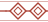
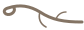
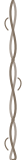

Paleta
O livro usa tinta preta, uma família de umbra para títulos e ornamentos de margem, e um único vermelho para tudo que é destaque. As aberturas de capítulo trazem a noite azulada das pinturas.
Pergaminho
Umbra e sépia
Vermelho
Noite, névoa e musgo
Tipografia
Aniron para o que é uncial; Libre Baskerville no lugar da ITC New Baskerville; Jost no lugar da Niveau Grotesk; Kalam é a mesma do livro.
logo, capa, capítuloSombras de Eriador
título de página
Anões do Povo de Durin
seção
Características
subseção
Bênção Cultural
tópico
Padrão de Vida · Próspero
tópico em destaque
Naugrim
rótulo de seçãoCapítulo 3 · Aventureiros
17px / 1,55
Os Anões são um povo antigo e orgulhoso, cujos costumes e tradições são em grande parte desconhecidos dos forasteiros. Uma minoria decrescente, recuperaram recentemente parte de sua grandeza perdida.
epígrafe, fala
"Se não encontrarem lugar para eles, eles vão arranjar. Têm direito de viver, como qualquer outro povo…"
tabelas, blocos, caixas
Escolha um conjunto de Atributos, ou role um dado de Sucesso. Vigor: Força + 22 · Esperança: Coração + 8 · Aparar: Sagacidade + 10
diário, notas de viagem
Terceiro dia de marcha pela Estrada Leste. Chuva fina desde Bri. Encontramos pegadas grandes demais para serem de Homens.
Você ainda era um bebê quando Smaug, o Terrível, caiu sobre a Cidade do Lago, e não tem memória de escapar do fogo e marchar para o Vale.
Aventurando-se na Terceira Era
Contos e aventuras brotavam por toda parte aonde quer que ele fosse, da maneira mais extraordinária.
Bloco .titulo-livro: rótulo de capítulo, título uncial e lema itálico com floreios, exatamente como as aberturas de página do livro.
Ornamentos
Recriados em SVG a partir dos motivos do livro. Recoloríveis, leves, sem recorte de arte protegida.

orn-banda.svgfaixa de nós (repeat-x)
orn-emblema.svgestrela do centro da banda, fim de seção

orn-floreio-e/d.svgfloreios do lema
orn-anel.svgtopo das caixas laterais

orn-vinha.svgvinha das margens (repeat-y)
orn-titulo-e/d.svgvolutas dos títulos da ficha
orn-losango.svgcampo de valor
Banda com emblema e rótulo de capítulo: .banda.com-emblema + .capitulo
Separador: .ornamento
Blocos de página
Botões
Abrir a aventura Ver regras Convite Pequeno
Tags
Introdutória1 sessãoEriador5 heróisEsperançaSombra
Cards da estante
A Estrela da Névoa
Uma Companhia parte de Bri em direção às Colinas dos Túmulos. O que dorme sob a terra não gosta de ser acordado.
Sob a Colina
Para páginas do Mestre e conteúdo de Sombra. Mesma estrutura, fundo de noite.
Destaque
Regras de O Um Anel
O essencial para sentar à mesa: o dado do Destino, dados de Sucesso, Esperança, Sombra, Jornadas, Conselhos e Combate.
Abrir as regrasInset de regra
Aventureiros Anões não podem usar os seguintes equipamentos de guerra: arco grande, lança grande e escudo grande.
Narrativa (ler em voz alta)
Caixa lateral (callouts)
Muitas gemas encontradas nas raízes das montanhas e colinas foram lapidadas e engastadas por ourives Anões de grande renome, em cidades como Nogrod e Belegost.
Se a Companhia acampar ao ar livre nas Colinas dos Túmulos, teste de Sombra com 2 pontos.
Variante escura para revelações e pontos de Sombra.
Bloco de regras escuro
Rolagem básica
Role o dado do Destino (d12) mais um dado de Sucesso (d6) por ponto de perícia. Some tudo e compare com o Número Alvo. O Olho de Sauron conta zero. A runa de Gandalf é sucesso automático.
Dados
12G◉ 462
Dado do Destino: .dado.feat, .gandalf, .olho. Dado de Sucesso: .dado.sucesso, .seis (tengwar), .miseravel (resultado anulado quando Miserável).
Tabelas
| Rolagem | Força | Coração | Sagacidade |
|---|---|---|---|
| 1 | 7 | 2 | 5 |
| 2 | 7 | 3 | 4 |
| 3 | 6 | 3 | 5 |
| 4 | 6 | 4 | 4 |
| 5 | 5 | 4 | 5 |
| 6 | 6 | 2 | 6 |
| 1 | Joia (gema única) |
| 2 | Broche |
| 3 | Colar |
| 4 | Diadema ou coroa |
| 5 | Cinto, corrente ou bracelete |
| 6 | Anel |
Ficha de Herói
Vocabulário da ficha custom: títulos vermelhos em uncial com volutas, campos em losango, caixinhas de perícia com marcador de Favorita.
Geira, Filha de Gautarr
Bloco de Adversário
Reprodução do bloco do capítulo 8: nome em itálico vermelho, descrição em grotesca, painel creme com losangos.
Quando um inverno particularmente rigoroso passa, Homens do Sul podem reunir bandos de guerra e procurar alguma fazenda isolada para saquear, antes de voltar tão rápido quanto vieram para as brumas de onde saíram.
Um Campeão Sulista pode ser um chefe de Dunland, um senhor de bandidos capaz de unir guerreiros indisciplinados num pequeno exército, ou apenas um brigão particularmente cruel.